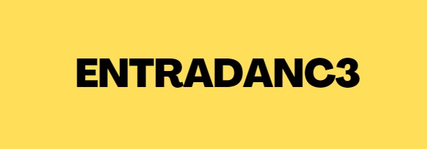

Sobre EntraDanc3
EntraDanc3 es mucho más que un blog: es una puerta al increible mundo de las fiestas electrónicas. Nació con la intención de compartir la cultura, los valores y las vibras que hacen de cada evento una experiencia única e inolvidable.
Aca buscamos que te curiosidad el hecho de conocer una fiesta de esta índole donde se respestan diversos codigos, como el famoso Permiso, Perdón y Gracias, estas son cosas que a lo largo de los años se han ido perdiendo y que nosotros queremos recuperar.
Nos apasiona transmitir la esencia de este movimiento, entendiendo que detrás de cada track hay una historia, un mensaje y un sentido de pertenencia que conecta a miles de personas. Ya seas un viejo de la escena o alguien que recién empieza a descubrir este mundo, EntraDanc3 te guía y te acompaña.
¡Sumate a esta movida y descubrí con nosotros las fiestas electrónica!